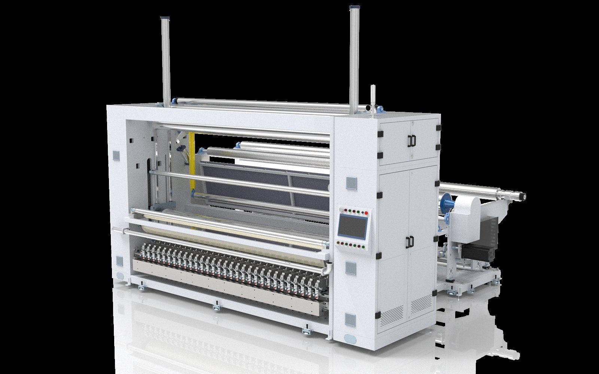

升级机型
降低噪声、降低振动，并兼容更多材料。
本次高速分切机新图展示的是升级后的机型。HDPTH 对驱动系统和基础工艺进行了升级，更适合现代后整理车间对低噪声、低振动和稳定运行的要求。
- 升级驱动系统，降低设备高速运行时的声噪。
- 升级基础工艺，降低设备运行振动量，提升运行稳定性。
- 新型分切机可对不同种类材料进行分切，帮助客户减少因材料变化而重复采购新设备。
- 适用材料包括纺粘、水刺、针刺、木浆、熔喷、复合、可冲散、热风无纺布、薄膜和纸张。
Product Value
For clean cutting and stable roll output.
This machine type is suitable when buyers need precise roll width, reliable tension control and consistent operation in high-volume converting environments.
- Suitable materials: spunbond, spunlace, needle-punched, wood pulp, meltblown, composite, flushable and hot-air nonwoven, plus film, paper, textile and flexible roll materials
- Production focus: clean cutting, stable tension, lower running noise, reduced vibration and accurate rewinding
- Configuration: width, speed, knife system, winding method and controls customized by project
- Industries: hygiene products, medical materials, wipes, packaging and industrial nonwoven processing
Technical Data from Product Manual
Automatic row knife slitting machine configuration.
Confirmed from HDPTH product manual. Final machine configuration can be adjusted according to material, width and process requirements.
| Item | Manual Parameter | Buyer RFQ Note |
|---|---|---|
| Production Speed | 500-1200 m/min | Confirm stable running speed with material sample |
| Unwinding Diameter | 1200-2500 mm | Provide parent roll diameter |
| Rewinding Diameter | 1200 mm | Confirm finished roll diameter and core |
| Minimum Slitting Width | 45-65 mm | Depends on knife and material configuration |
| Effective Winding Width | 1500-4500 mm | Custom width range available |
| Applicable Basis Weight | 12-120 g/m2, except fluffy products | Share GSM or thickness |
| Installed Power | 35-65 kW | Confirm electrical standard |
| Effective Operating Power | 25-55 kW | Depends on final configuration |
| Air Supply | 0.5-1 m3/hour | Prepare compressed air supply |
| Materials | Spunbond, spunlace, needle-punched, wood pulp, meltblown, composite, flushable, hot-air nonwoven, PE film, paper and flexible roll materials | Send material details for testing |
常见问题
Can the machine be customized?
Yes. HDPTH can discuss machine width, cutting system, rewinding method, control setup and auxiliary equipment according to your production needs.
What information is needed for quotation?
Please provide material, parent roll width, finished roll width, speed target, roll diameter and application industry.